Hands-on maintenance.
Built for industrial systems.
I’m Moses Adetayo, a Lagos-based Maintenance Technician developing into industrial electrical and field engineering. My practical exposure includes diesel generators, electrical distribution, troubleshooting, preventive maintenance and live facility operations.
Professional profile
I combine practical maintenance experience with continued development in power systems, industrial electrical maintenance, PLC/HMI and automation. I am interested in field-service environments where reliability, troubleshooting, safety and disciplined documentation matter.
Technical capabilities
Power equipment
Generator inspection, operating checks, alternator exposure, preventive maintenance and fault-finding support.
GeneratorsAlternatorsElectrical maintenance
Main distribution equipment, MCCBs, outgoing feeders, wiring inspection, backup power and practical troubleshooting.
3-PhaseDBsIndustrial development
Developing capability in motors, control circuits, PLC/HMI, automation and industrial power systems.
PLCMotorsSelected field projects
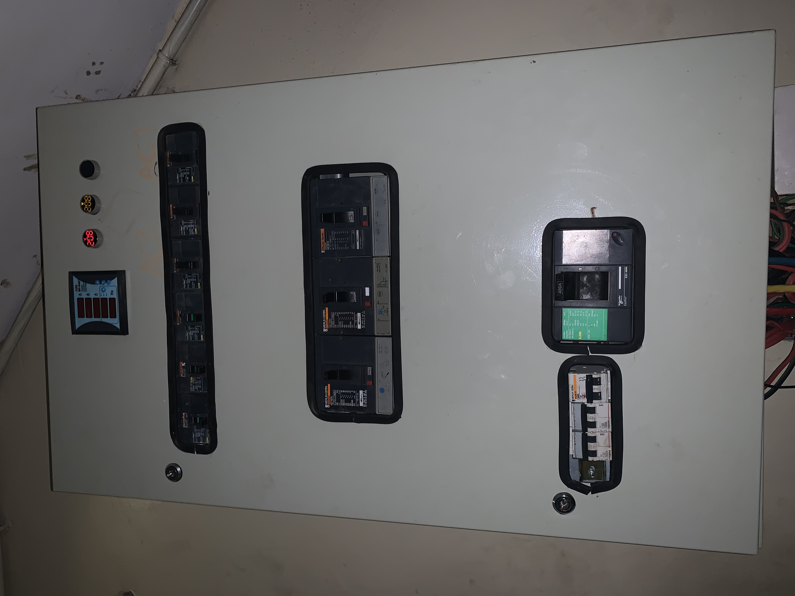
01 — Commercial electrical distribution
Field exposure around a main low-voltage distribution board with a 400 A MCCB, three-phase busbar arrangement, outgoing feeders, cable terminations and earthing.
- Inspection and maintenance exposure
- Protection and feeder identification
- Distribution architecture awareness
- Fault-finding and load-management awareness
02 — Generator maintenance & troubleshooting
Hands-on exposure around Perkins diesel-generator systems, including engine compartments, alternator components, operating checks and maintenance activities.
- Component identification
- Preventive maintenance support
- Alternator/charging-system exposure
- Structured troubleshooting
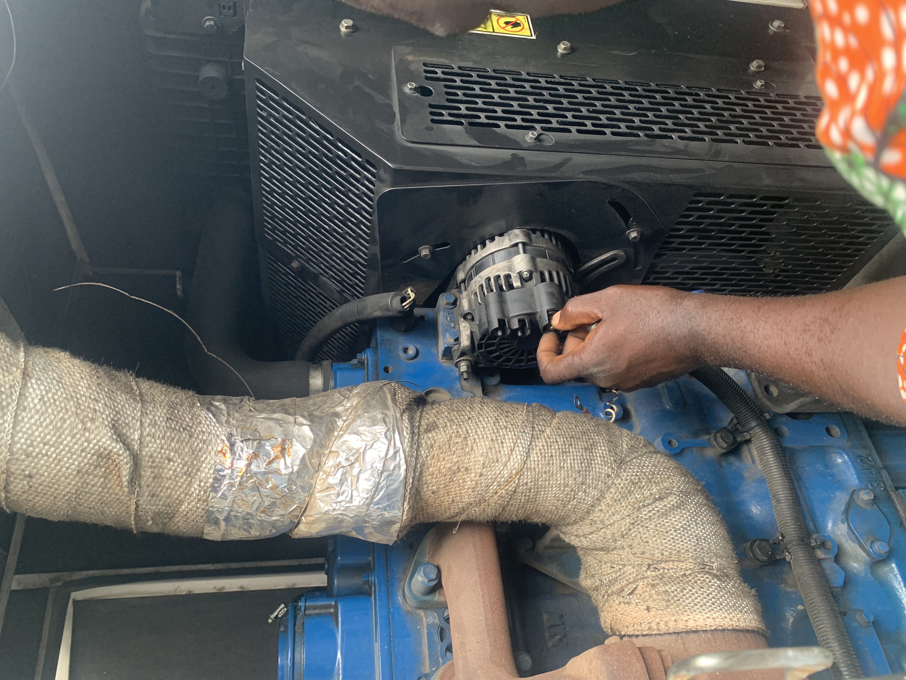
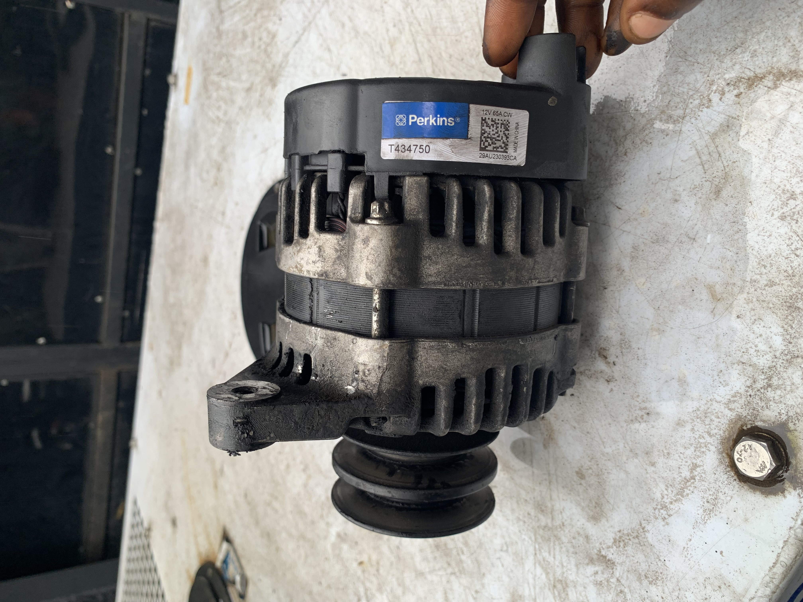
03 — Alternator fault investigation
Inspection of damaged alternator/winding components strengthened my understanding of electrical-machine failure and the relationship between the prime mover, alternator and generated power.
Approach: inspect, document the condition, identify likely causes and apply appropriate corrective action with qualified technical support.
04 — Preventive maintenance & reliability
Worked with maintenance records containing equipment data, running hours, inspection points and load-test readings, reinforcing the importance of accurate technical documentation.
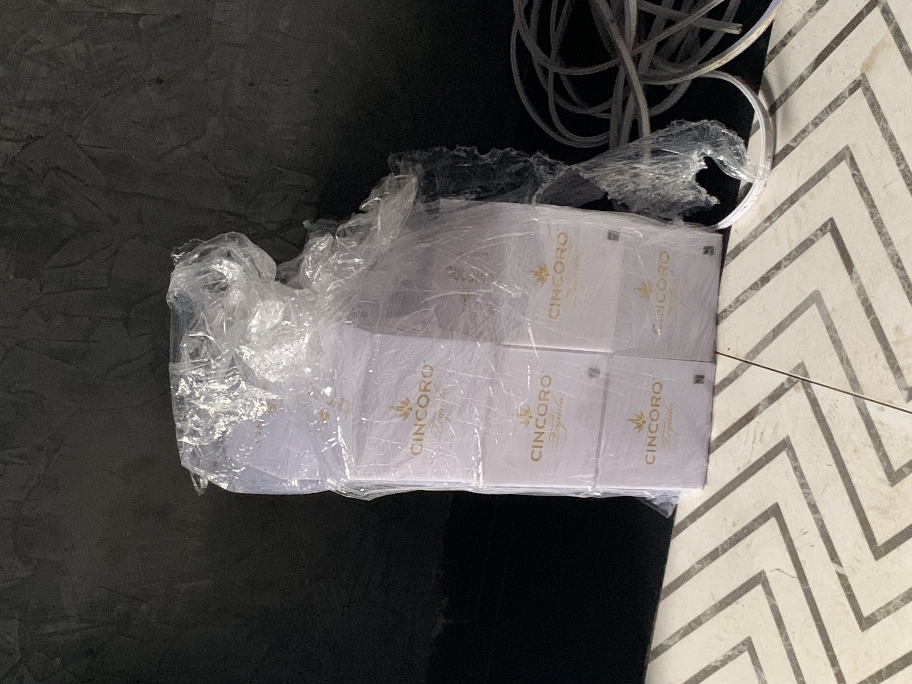
Field evidence
A visual record of electrical, generator and maintenance environments. The Dembal invoice/document is intentionally excluded.
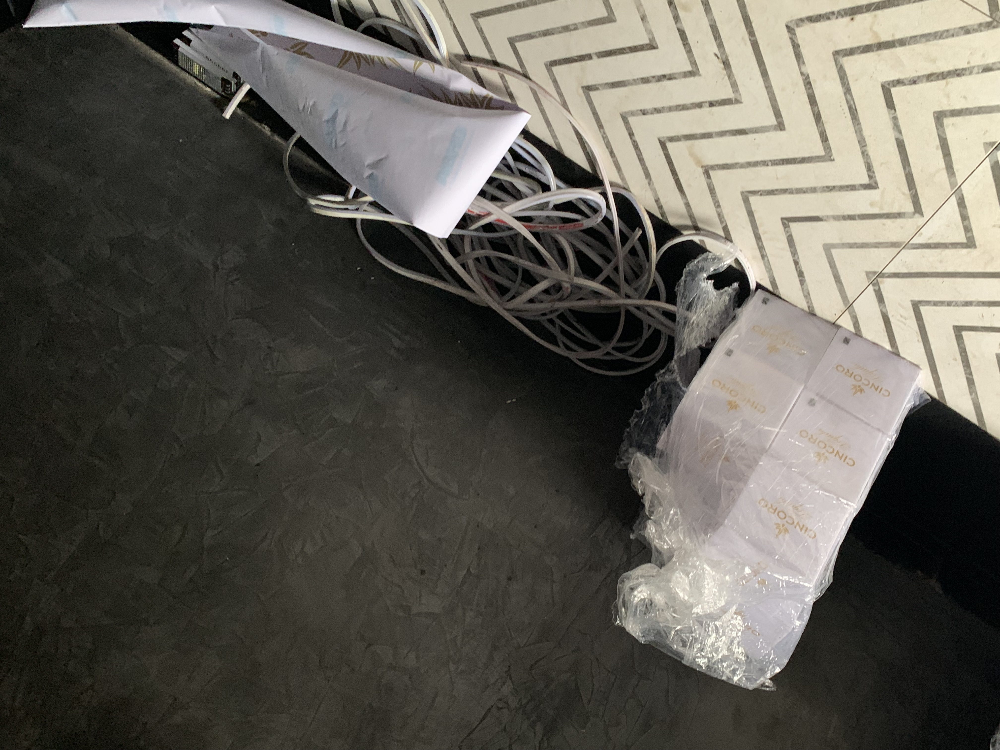
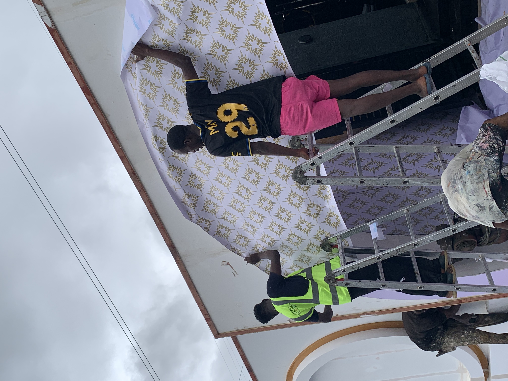
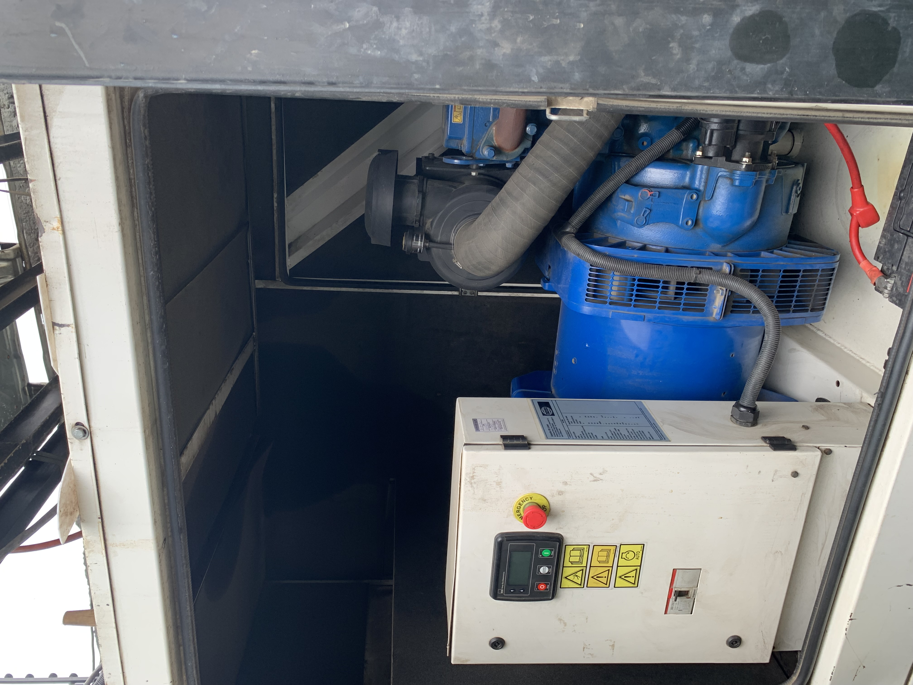
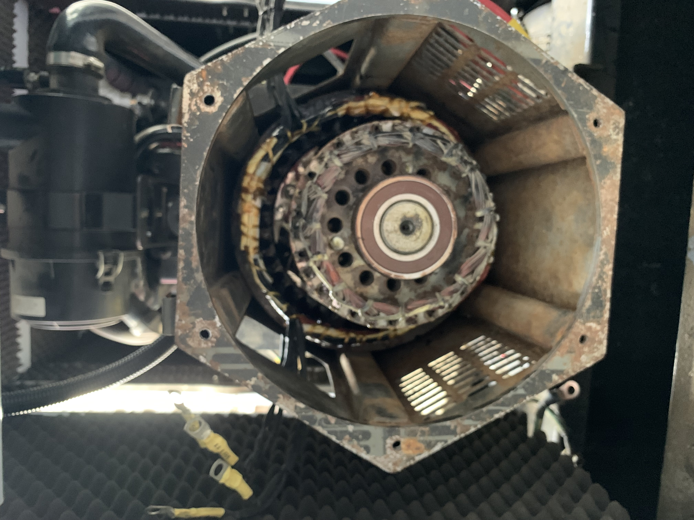
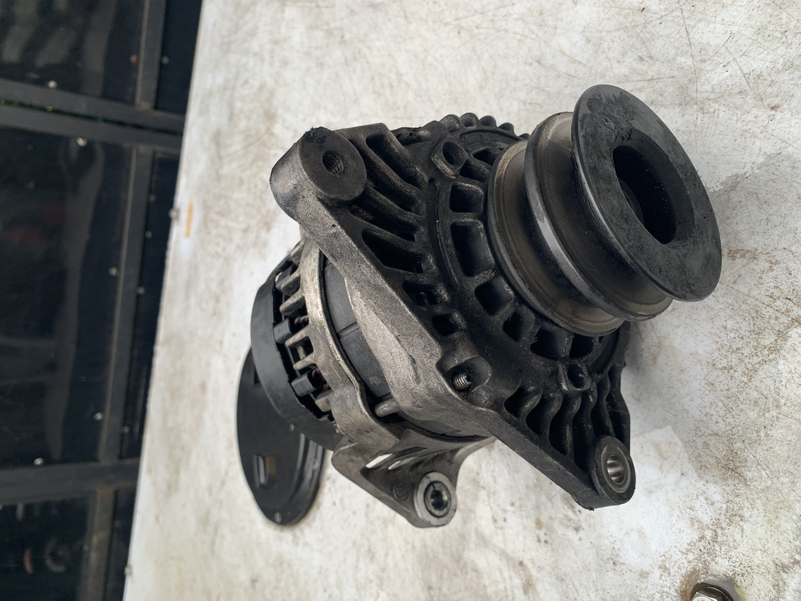
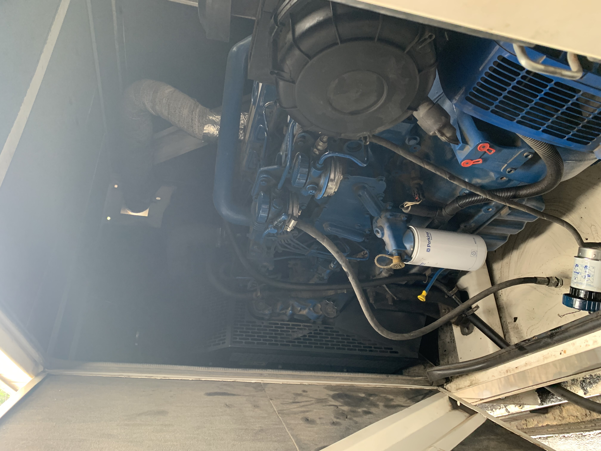
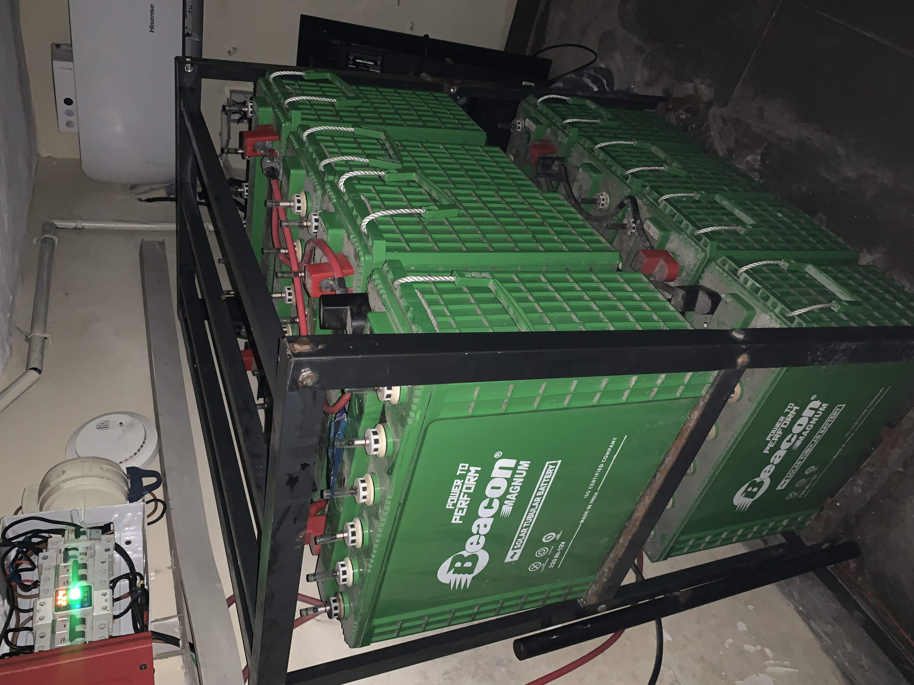
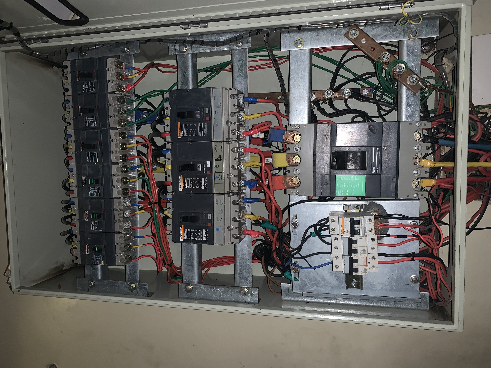
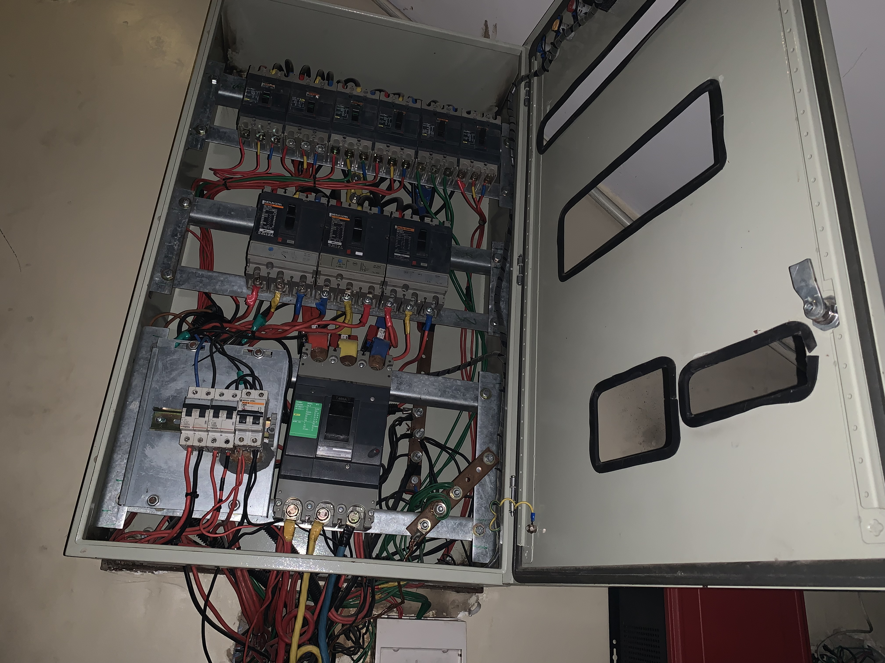
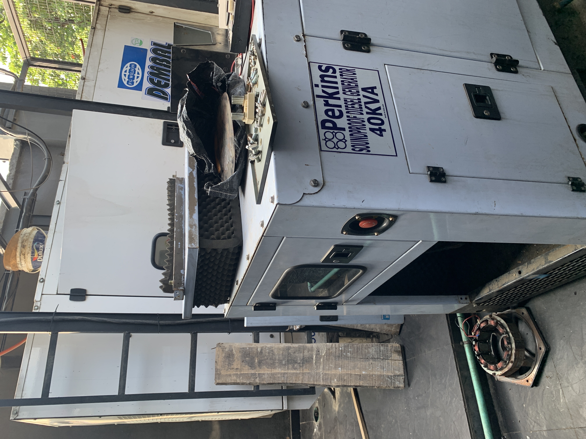
Career direction
My goal is to turn practical maintenance experience into strong industrial field capability — then grow into power, plant and project engineering.
Let’s connect
Open to field technician, electrical maintenance, power-equipment and industrial technical opportunities.